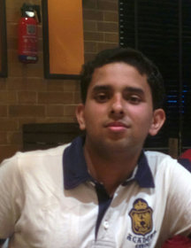

I am a Research Fellow at Microsoft Research Lab India, where I work with Amit Sharma on projects related to Causal Inference and Explainable Machine Learning. Prior to this I completed my undergraduate double major program in Mathematics and Computer Science from the Indian Institute of Technolgy Kanpur.